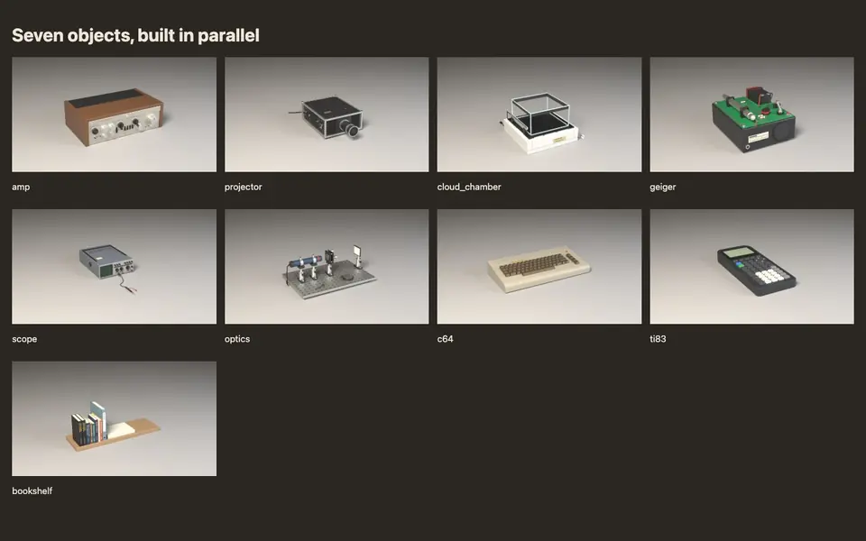
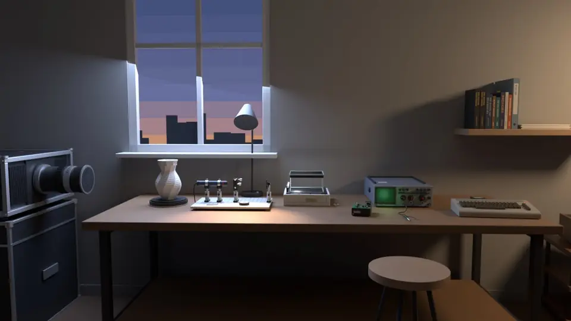
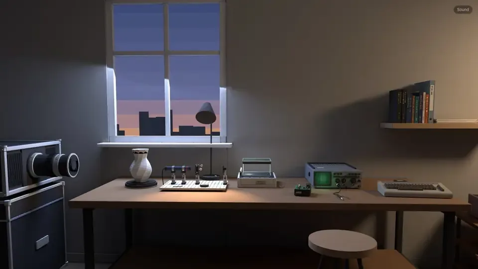
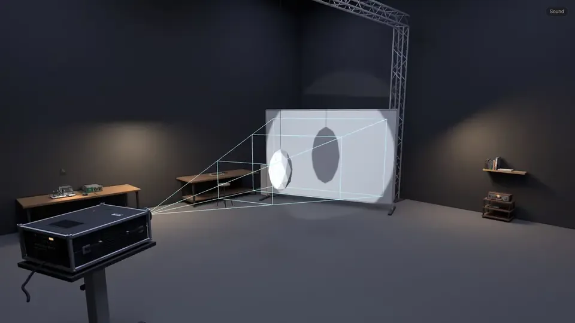
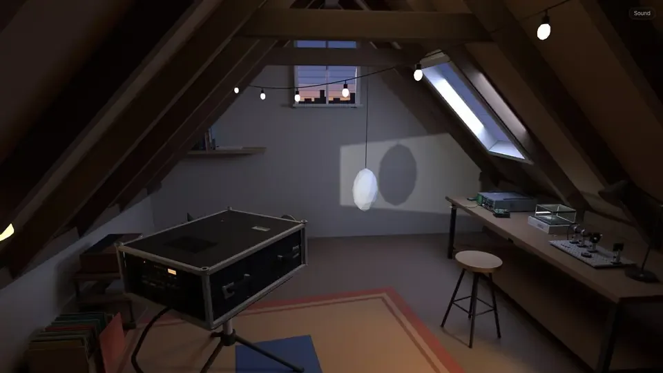
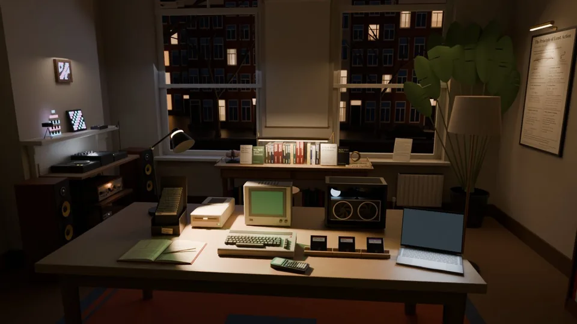

The room on the front page is the front room of a canal house at night, with a desk, a cabinet and the instruments of a physicist who became an AI engineer. Nobody modelled it by hand. Claude agents wrote the Python that builds every object in Blender, Blender bakes the light, and three.js draws the result in your browser, on a phone as well as on a desktop.
Ruud Hendrikx sets the direction, makes the calls and judges the result. The practice: automated gates and an outside review panel on everything, and his own read of the code where it is new in kind or touches security and privacy. This page is the method section: what was built, under which constraints, how it was checked, and what did not work.
In short.502 commits over 43 days, in 35 numbered rounds. The room downloads in 7.0 MB of an 8 MB budget; its model draws in 52 calls of 60 and holds 111,223 triangles of 150,000. A gate script of 32 gates decides when a change is done; a review panel whose members never built what they judge decides what to change next.
01What was built, under which constraints
One page, one 3D scene, two kinds of device. The room is a single glTF model with baked textures: Cycles computes the light once, offline, and stores it in the textures, so the browser only draws unlit surfaces. That is what makes a lamp-lit night interior cheap enough for a phone. On top of the bake run live layers: rain on the glass, reflections on the water, a working Commodore 64, decks that play a synthesised loop and drive the facades across the water (the University’s windows run a living system, “Slinger en lading”, ported from lume-machine, the author’s own light experiments), and a physics model computed in your browser. Without WebGL the page shows a baked still and stays readable.
The model. A card on the desk grows a hypergraph by one rule of the Wolfram model, {{x,y},{x,z}} → {{x,z},{x,w},{y,w},{z,w}}, from the state {{1,2},{1,3}}: one rewriting event every five seconds while the card is in view, laid out by a spring embedder, with the causal graph of the events beside it. The model is deterministic: the same start gives the same graph.
The view through the windows is a real place in Amsterdam: the canal, the row of houses opposite and the University to the left are built from public open data (the 3DBAG building heights and the BGT map of water and street lights), the boats follow photographs, and the lit windows and the light show on them are added.
Constraint
Budget
Measured
Download: model and textures
≤ 8 MB
7.0 MB
Draw calls
≤ 60, in the model and in the browser
52in the model; the browser is held to the same 60 at every view
Triangles
≤ 150,000 at every viewpoint, plus a budget per object
111,223in the model; the browser is held to the same 150,000 at every view and through the phone’s opening flight
Devices
desktop 1440×900 and an emulated iPhone 13: touch, no sideways scroll
both, in the navigation, touch and layout gates
Console and network
zero errors, zero failed requests
clean
60 fps on a mid-range phone
the goal
unmeasured
Budgets are constants in the gate script; a build over any of them fails. The measured figures are written into this page when the site is staged, from the model it ships with: the bytes of the model and its textures, and the triangles and draw calls the gate script counts in the model. The browser’s own counts, with the live layers added, are gated at every view and not quoted here.
Textures are KTX2 (Basis Universal), transcoded on the device to the GPU’s own block format, and meshes are compressed with meshoptimizer. The decoders and three.js itself load from a public CDN; everything else is served from this site.
02Method
The code is the scene. Blender runs headless as a Python library. Every object is one module with real dimensions in metres, each a named constant with its source, or marked unmeasured where it is an estimate. The same assembly feeds the reference render and the web export, so the two cannot drift apart.
End to end first. One object, an amplifier, went the whole path, from Python model to Blender bake to browser, before a second object existed. The delivery bugs it surfaced would otherwise have hit every agent after it.
Rounds of parallel bets. A round starts from one merged room. Up to four agents each build one direction, on its own branch, against the same gates. The bets are judged side by side, labelled by letter, never by author; the parts that win are merged in a set order, the room is baked once, and the merge is tagged with a runnable copy of the site, so any round can be reopened.
An outside panel. The builder never grades its own work. After a round, a panel of reviewer agents with fixed seats judges the build, each on its own axis: a cinematographer, an architectural historian, an experimental physicist, a creative technologist from an awards jury, a real-time 3D technical artist, a UX and accessibility researcher, and a prospective client. A chair reads their reports, not the build, and writes one ranked list of actions, each with the file it touches. A blocker from any seat, such as a privacy leak, a broken phone layout or wrong physics, outranks every score. Before publishing, a separate review with legal, privacy, reputation, quality and visitor seats went through the whole site. The seats are reviewers; none of this is a user test.
Gates decide when a change is done. One script exits red on any miss. An agent is done when the gates pass, not when its code looks right, and a finding stays open until a gate measures it, not until someone says it is fixed.
Ruud decides what is right. Direction, taste and every call that cannot be undone are his. When the panel and his taste disagree, his taste wins: he picks the direction, the panel ranks the execution.
What a gate proves
The gate script runs 32 gates with 208 checks written into 4,565 lines of Python. It drives a real Chrome through Playwright, on a desktop window and an emulated iPhone, and reads the page the way a visitor meets it. A selection:
Kind
The gate proves
It passes when
Budget
the room fits a phone’s download and draw budget
≤ 8 MB, ≤ 60 draw calls, ≤ 150,000 triangles at every viewpoint and every key of the opening flight
Pixels
the browser draws what Blender rendered: camera, geometry and colour agree
mean difference ≤ 2.0 and 99th percentile ≤ 16 grey levels against the baked render, on a 320×180 downscale; for this room the numbers are reported on every run rather than gated
Navigation
every view is reachable by click, tap and keyboard, and back again
every view in one click each way, on desktop and phone; with reduced motion the camera cuts instead of flying
First visit
a visitor who knows nothing finds the work
a scripted visitor, clicking only where the cursor turns into a pointer, finds all six cases within 20 clicks
Touch
every case can be hit with a thumb
a tap target of at least 44 CSS pixels on the phone
Flashes
the light show stays under the seizure threshold
WCAG 2.3.1 on rendered frames: at most three general or red flashes a second in any 10° field, desktop and phone
Behaviour
the C64 is a working machine, not a picture
each disk loads by its name, prints its page within 40 columns and opens its case
Privacy and copy
nothing served says what it should not
zero hits for a list of private strings, read at run time from a note outside the repository, in every served file and inside the 3D model
Every claim carries its label
Agent reports, panel reports and the notes in the repository mark each claim with how it is known. A recommendation may rest on a reasoned or unmeasured claim, but then it says so, and says how the claim could be measured.
measured
Tool output: a gate, a script, a pixel count. “The model has 52 draw calls.”
seen
Read in a file, or looked at in a render or a screenshot. “In the phone screenshot the hypergraph card stands clear of the monitor and the PC.”
reasoned
A judgement from the evidence, not a measurement. “Most of the remaining difference from the full render is shine on metal and glass, which a bake cannot store.”
unmeasured
An estimate, flagged as one. “60 fps on a real phone.” The headless frame rate comes from a software rasteriser and is never quoted as a phone number.
When something fails
A red gate gets one of three answers: a fix at the cause, a risk accepted by name, or the feature removed. A gate is never loosened by the agent it is failing. After two fix rounds on the same problem the agent stops, writes down what the failed fixes had in common, and the question goes to Ruud. An example from round 031: a phone check that every book spine stands out from its own colour by a set lightness difference. Two rounds of new inks fixed the old failures and tipped three spines that had passed before. The agent stopped there and put two options to Ruud instead of lowering the threshold. He chose a closer phone frame of the shelf, and the check now passes at the same threshold.
03The numbers
commits on the room
502
days from the first commit, 23 of them with commits
43
numbered rounds
35
object modules in Python
90
lines of Python · JavaScript
23,369 · 10,911
gates in use · checks written
32 · 208
Figures read from the repository at commit 08a119c, 26 November 2026. Not every object module is in this room: earlier rounds built instruments that later left it. The room’s own budgets are in the first table.
04Decisions that mattered
Compress before cutting. By round 015 the room weighed 7.9 MB against a budget of 8. Instead of removing objects, the textures moved to KTX2 and the meshes to meshoptimizer: 4.5 MB after it. That headroom paid for most of what was added since.
Remove what visitors do not need. The paper labels on the objects went in round 023: without them the room reads as a room, not a diagram. The glow that showed what can be clicked went in round 030. Both removals raise the same question, whether a first visitor still finds the work, and the first-visit gate answers it on every full run: in round 030, the first without any glow, its scripted visitor still found all six cases within the 20 clicks allowed.
One dependency fewer. The rain used to follow the live weather from a free public API, whose free tier is for non-commercial use, and it cost a request to a third party on every visit. The rain is now seeded from the visitor’s date: the same rendering, no outside call.
Report the honest number. The fidelity check compares the browser with Blender’s full render, including the shine on metal and glass that a bake cannot store, because it depends on where you stand. On the dusk room of the first evening the mean difference was 2.49, and the limit was set at 2.5. The canal house measures well above it, so for this room the number is reported on every run rather than passed, and this page says so.
05What failed
The amplifier was a guess. The first amplifier had large VU meters. The Luxman L-308 it was meant to be has none. The rule since: research the real object before modelling it, and put each dimension’s source next to the number.
The preview sandbox. The first previews were hosted in a sandbox that refused the model’s binary files, ignored the import map and quietly showed the still image instead of the 3D room. Nothing errored; it just looked fine. Since then previews are served from Ruud’s own machine and checked by Playwright at exactly that address.
The big-space detour. Four large atelier layouts, up to sixteen metres long, passed the size, draw-call, console and phone gates. Ruud rejected all four on sight: the coziness was gone. The gates measure whether a room works, not whether it is the right room.
The agents’ taste lost. Of three cozy variants the agents recommended the attic, with a reasoned case. Ruud chose none of them and asked for the front room of a canal house at night. No gate could have found that.
What no gate sees. Frame rate on a real phone is unmeasured; the motion gate is a proxy, a desktop browser with its processor slowed six times. Whether the room is memorable is a judgement, and stays one.
06The rounds
The first evening went from a flat page to the canal house in eleven iterations. After each, a script tagged the commit, saved a runnable copy of the site and took desktop and phone screenshots.
00115 October
Five directions in 2D
Five agents, one brief, each its own direction: a career drawn as an emission spectrum, a C64-to-terminal story, a live simulation of agents and gates, a maker’s workbench, a field manual. The workbench won, and Ruud asked for more: a real 3D room.
Each agent owns one file and builds on a neutral studio set: an amplifier, a laser projector, a cloud chamber, a Geiger counter and an oscilloscope, an optics table, a Commodore 64 with a TI-83, a bookshelf.

00615 October
Live layers
The instruments started measuring: muon tracks in the cloud chamber followed the measured cos²θ distribution, and the Geiger counter ticked at about 20 counts a minute. Below, Blender’s reference render and the same view drawn by the browser; the pixel gate compares the two.


00715 October
The big space dropped
Four large atelier layouts. All green on the gates; rejected on sight.

008–01015 October
Three cozy variants not chosen
An attic, a canal-house back room at dusk, and the dusk room pulled back. The agents recommended the attic.

01115 October
The canal house, at night
None of the three. Ruud chose the front room of a canal house, on the first floor, at night in a light rain. A live layer adds rain on the glass and reflections on the water.
012–03316 Oct – 22 Nov
Rounds with a panel
From here most rounds ended in a written panel review. A selection of the titles:
013The first four-bet round merged: camera, quay, door, lamplight
015Texture and mesh compression, 7.9 to 4.5 MB
017A C64 with hand-written BASIC; click to move
018Click-through navigation: one click to every case and back
019Head-like camera moves and walking
021A content round; free movement on desktop and phone
022A light show on the facades across the water
023DJ decks drive the facades; the paper labels go
024The show made calm: fades instead of strobes
025The cabinet: the desk becomes the centre, the lab instruments leave
026Four directions for the room’s theme, compared
027Three themes; the floppy disk, the drive and the C64
028Which books, and how their spines must read
029The night relight: one warm lamp
030Nothing lights up; a publish review with five seats
031Ready to publish: comments stripped from the served code, a privacy gate, this page rewritten
032The real view outside back; every sentence in one file, editable without a bake; book spines set after the real editions
033Sharper disk labels; a hypergraph card that grows on the desk

07Credits and licences
Direction, decisions, final say
Ruud Hendrikx
Code, models, gates, this page
Claude agents in Claude Code; most commits by Claude Opus 5.5
Modelling and baking
Blender 5.2 and Cycles, driven from Python
In the browser
three.js 0.160 (MIT); the meshoptimizer decoder 1.3 (MIT); the Basis Universal transcoder as shipped with three.js (Apache-2.0)
Type baked into the room
Rasterised into the textures when the room is built. Book spines and covers: Nimbus Sans Narrow, Nimbus Sans, URW Gothic and C059 by URW++ (AGPL-3.0 with the font exception), and Noto Sans Black. Disk labels and the disk box: Noto Sans Mono, drawn as a bitmap face and as a stencil; Nimbus Mono PS and Nimbus Sans Narrow by URW++; Kalam by the Indian Type Foundry. The formula in the open book: Noto Serif Italic. The Noto faces are by the Noto Project Authors; Noto and Kalam are under the SIL Open Font License 1.1
Type drawn live in the room
Archivo Narrow by Omnibus-Type, on the decks’ screen; Noto Serif by the Noto Project Authors, on the hypergraph card. Both served from this site under the SIL Open Font License 1.1, each with its licence beside it
Sound
Field recordings, cut and filtered for the room: rain against a window by cori, a gutter by aldor, creaking wood by stephan and a herring gull by avphillips (public domain, via PDSounds); light rain and distant thunder by kvgarlic, a church bell by milo and a blackbird by tinga (CC0, via Freesound); a coot by Zarni02 (public domain, released by its author). All from Wikimedia Commons; the list with links is served beside the files, audio/SOURCES.txt. The decks’ two records are synthesised from their score, rendered offline at release quality (deck-a, deck-b, fetched at a deck’s first play) and played live in the browser until a file arrives; the boat and the instruments’ clicks are synthesised in the browser
Physics model
The hypergraph rule: Stephen Wolfram, A Class of Models with the Potential to Represent Fundamental Physics (2020). Implemented from the paper; no code taken from it
Coastlines, land and lakes from Natural Earth (1:50m, public domain), drawn in sepia with a graticule and no borders for the floor globe (room/tools/globe_map.py)
Self-checks
Playwright for Python on Chrome; pixel differences with Pillow and NumPy